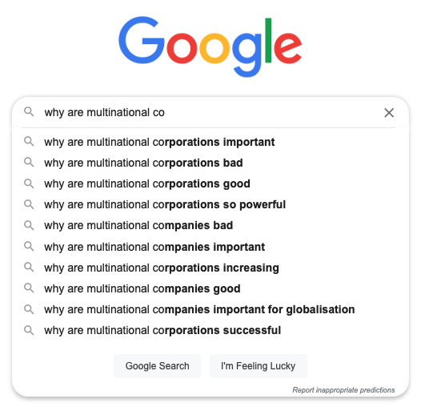
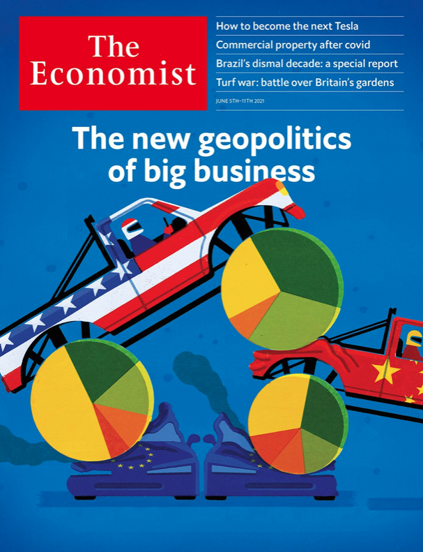
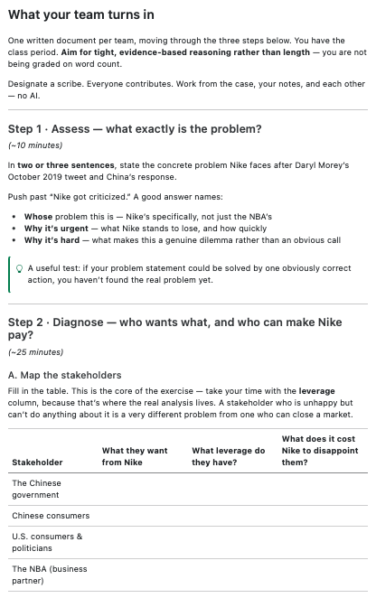
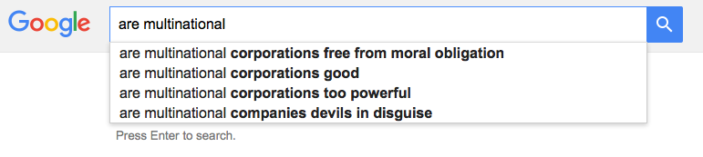
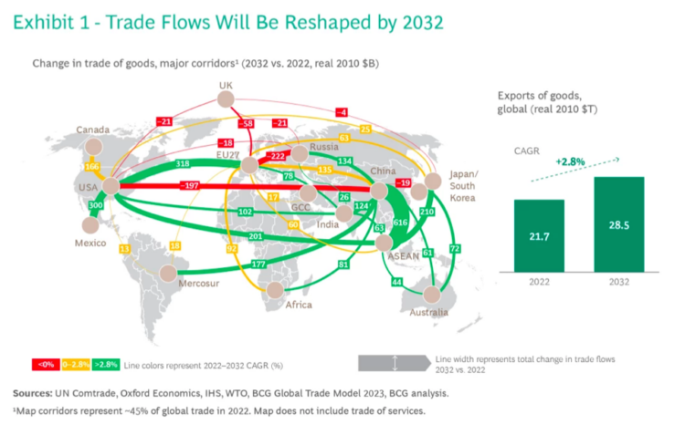
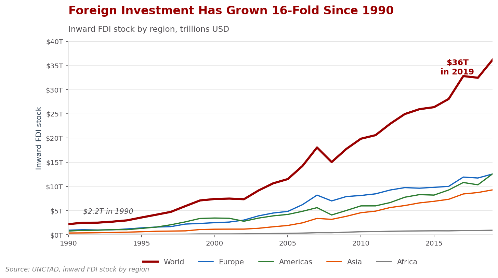
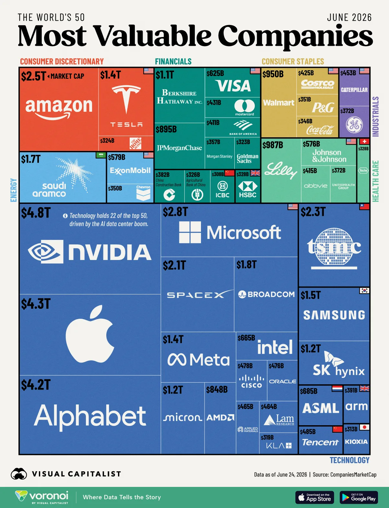

Global Business
INTL-I103 | Week 1 — Introduction
August 24, 2026
Today’s Plan
| Section | What we’ll cover |
|---|---|
| 1 · Welcome | What this course is, who I am, and who you are |
| 2 · What you’ll learn | The substantive and analytic outcomes for the semester |
| 3 · Course logistics | Where to find things, the M/W rhythm, case write-ups, and assessment |
| 4 · What is global business? | Working definitions — and the questions we should be able to answer |
| 5 · The scale of global business | Stylized facts: how big, how integrated, how concentrated |
| 6 · This week’s case | Nike, the NBA & China — our practice case for Wednesday |
Welcome
What this class is about
Global business sits at the intersection of politics, policy, and practice.
- What dilemmas do firms face operating across very different political, cultural, and regulatory landscapes?
- Who holds power in the global economy — and how does that shape what companies can and can’t do?
- How can communities capture the benefits of global business while managing its risks?
We answer these with real cases — Nike, ExxonMobil, Siemens, Apple, Patagonia, H&M, TikTok, and more.

People already have strong priors. We’re going to test them.
Who Am I?

Professor Sarah Bauerle Danzman
I study multinational firms as political actors — how they get power, how governments try to control them, and who wins when those two collide. Lately that’s meant a lot of work on investment screening, economic statecraft, and national security. I co-authored the TikTok case we’ll study later this term.
Office hours: M/W 8:30–9:30 AM & 2:15–3:30 PM, GISB 1013 — and by appointment Best way to reach me: Canvas message or sbauerle@indiana.edu
Now — who are you?
Turn to the person next to you. You have three minutes. Ask, and answer:
- What’s your name?
- Where’s home?
- Any siblings? If so, what’s your birth order?
- One interesting thing you did this past summer.
What makes this class different: politics, policy & practice

Most business courses treat the political environment as background noise. Here it’s the core object of interest.
What you’ll learn
Substantive outcomes
By the end of the term you’ll be able to:
- Describe the global production structure, the history of the MNE, and the major controversies surrounding their operations
- Explain and assess major IR approaches to power in the global economy, and how actors translate power into influence and authority
- Critically assess the political, institutional, and cultural roots of an MNE’s operational challenges
- Evaluate MNEs’ environmental, social, and governance impact on the communities where they operate
- Judge when “responsible business conduct” policies like CSR work — and how political and economic structures undermine them
- Identify the national-security and economic-statecraft tools states use to manage MNEs — tariffs, investment screening, export controls — and assess the tradeoffs
And the skill underneath all of it
You’ll develop transferable analytic skills as you:
Assess the concrete problems MNEs create, through varied evidence → Diagnose their root causes → Propose solutions.
That’s the structure of every case write-up you’ll do this term.
These aims fulfill International Studies Department Learning Outcomes in Global Knowledge, Global Skills, and Global Thinking.
Course logistics
Where to find information
The course website
Your first stop for everything academic.
- Syllabus — policies, grading, outcomes
- Schedule — every meeting, with readings listed under the day they’re due
- Assignments — full detail on write-ups, exams, community participation
- Day pages — each meeting has its own page with that day’s readings and slides
- Resources — course pack, study help, student support
The schedule is the living document. Check it weekly.
Canvas
Your first stop for anything transactional.
- Grades — the only official record
- Announcements — turn notifications on today
- Readings not in the course pack — PDFs and links
- Forms — community participation submissions
- Exam review materials
Rule of thumb: what we’re doing lives on the website; your record of doing it lives in Canvas.
Class structure
Mondays
Lecture, framing, and discussion of the readings. We build the concepts and set up the week’s case.
Wednesdays
In-class group case write-ups. Your team analyzes the case and produces a written deliverable — during class, turned in before you leave.
Two rules that matter from day one
1. Readings are due the day they appear on the schedule — not “sometime that week,” and not only on Wednesdays. Monday readings are due Monday; Wednesday readings are due Wednesday.
2. Case write-ups are done by hand, in the room, without AI. No laptops drafting, no take-home revision, no generative AI. The whole point is the analytic work you and your teammates do together in the moment — that’s also what the exams test.
Assessment
| Component | Weight |
|---|---|
| Group case write-ups | 40% — in class, Wednesdays, in rotating teams |
| Cumulative final exam | 25% — in class, Wed Dec 9 (last day) |
| Midterm exam | 20% — in class, ~Oct 7 |
| Attendance & participation | 10% |
| Community participation | 5% — five academic events |
The case write-ups are the heart of the course — and because they happen in class, they also reward showing up prepared.
One thing to know up front
We take the final exam on the last day of class.
- Wednesday, December 9, in class, during our regular meeting time
- No registrar exam slot for this course during finals week
That frees your finals week entirely. The tradeoff is that review is more compressed, so the Day 28 session on December 7 is a full exam review — come to it.
Case write-ups: the format
- Assigned to a small team (4–5 people); teams reshuffle a few times across the term
- Each case Wednesday: read the prompt, work the case, produce a written deliverable together
- The first one (this Wednesday, Nike) is a practice round — it’s how you learn the format before it counts
- Every write-up moves through assess → diagnose → propose
- Graded on quality of analysis, use of evidence and concepts, clarity, and the soundness of your recommendation — not on reaching a “right” answer

You’ll get a packet like this every case day.
How to do well
- Come to class — and stay off your laptop and phone while you’re in it. Take notes by hand; the research on retention is emphatic.
- Do the readings before the day they’re listed.
- Contribute fully to your team’s write-ups.
- Participate in Monday discussion.
- Come to office hours early if you need help — September, not December.
- Tell me when something isn’t working, while there’s still time to fix it.
- Budget ~4 hours of work outside class each week — as you should for every course you take.
- Keep a sustainable sleep and eating schedule. It is not a side issue; it’s the thing that makes 1–7 possible.
What is global business?
What comes to mind?

Your turn: what are your associations with global business and multinational corporations? Shout them out — I’ll write them down, and we’ll come back to this list in December.
Things we should be able to answer
By December, each of you should be able to give a real answer to all three:
- What is global business?
- Why and how do businesses choose to globalize?
- Who benefits, who loses from global business — and why?
Everything between now and then is in service of those three questions.
The scale of global business
A $117 trillion system
Scale
- ~80x larger than 1960
- Top 10 economies = 67% of the total
Inequality
- All of Africa (54 countries) ≈ Texas
- India (1.4B people) ≈ the UK (67M) in GDP — despite ~20x the population
Source: IMF World Economic Outlook (Oct 2025)

Trade: the engine of integration

Trade volume today is roughly 2,000x the 1800 level. Almost all of that happened after 1950.
Where the goods actually move

Sources: UN Comtrade, Oxford Economics, IHS, WTO, BCG Global Trade Model 2023
Goods exports run $21.7 trillion a year and are projected to hit $28.5 trillion by 2032 — but the corridors are being redrawn: US–China shrinking, US–Mexico, India, and ASEAN growing. Where trade flows is a political fact, not just an economic one — it determines who has leverage over whom.
Foreign investment drives trade

Much of what we call “trade” is really firms shipping to themselves across borders. Investment comes first; trade follows.
Concentrated value
- The most valuable firms in the world are global firms — every one of them builds, sells, or earns across borders
- Value is concentrated by sector: technology alone holds 22 of the top 50, on the back of the AI data-center boom
- And by geography: a short list of headquarters countries sits behind firms whose decisions shape production everywhere else

Source: Visual Capitalist / CompaniesMarketCap · data as of June 24, 2026
So why does this matter?
Because of the scale, what multinationals do is not a niche business story — it is the global economy.
Because of the concentration, a small number of firms and states hold disproportionate leverage.
Because integration is reversible, the political conditions that made this system are contested right now — tariffs, screening, export controls.
The question underneath every case this semester
Who has power in this relationship — the government, the firm, or society — and what lets them exercise it? Every case we do is a version of that question with the names changed.
This week’s case
Nike, the NBA & China
In 2019, a single tweet by an NBA general manager supporting Hong Kong protesters set off a crisis: China retaliated against the league, and companies with deep stakes in the Chinese market — including Nike — had to decide how to respond.
For Wednesday, read:
- Tao et al., Nike, the NBA, China, and Free Speech: A Zone Defense ©
- “China’s fight with the NBA, explained” (Vox, ~10-min video)
- NYT Editorial Board, “The Chinese Threat to American Speech” (Oct 19, 2019)
What to think about before Wednesday
- Who are the actors, and what does each one want?
- Where does the power lie — with China, the NBA, Nike, consumers?
- What are Nike’s options, and what does each one cost?
We’ll use this case to practice the assess → diagnose → propose move you’ll use all semester.
Looking ahead
- Wednesday (Aug 26): practice case write-up — Nike, the NBA & China. Come having done the reading; bring something to write with.
- Next Monday (Aug 31): theory — are multinationals political actors? (Gilpin; Ruggie)
See the full course schedule and syllabus on the course site.
Questions?

INTL-I103 | Global Business